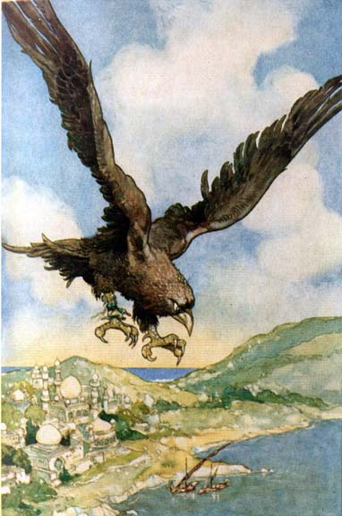

Saturday, April the 12th, 2014
back to: title, date or indexes

Chapter Six of Mr Key's Book Of Birds, a work in progress.
The roc is a type of bird. Actually, it is a fabulous bird, meaning it does not actually exist. So it is not entirely true to say it is a type of bird. We might say instead that the roc is a type of bird imagined in the heads of persons long ago. Or possibly just one person, whose phantasm was adopted by others, yea down the generations unto our own days.
“Fabulous” is the root of the slang word “fab”, popular in the 1960s, and surely overdue for a revival. The pop group The Beatles were commonly known as the Fab Four, but that is not to suggest that, like the roc, they did not actually exist. Or is it? Could the loveable moptops be nothing more than a hallucination shared by millions? Could The Beatles be a stupendously complex work concocted by the avant garde Japanese conceptual artist Yoko Ono (b. 1933)?
I am not going to argue the case, or provide evidence for my theory, in part because it is, to use Ambrose Bierce's favourite word, bosh. But it is something well worth thinking about, next time you find yourself at a loose end, as for example when a few days go by without any new postages at Hooting Yard. I know only too well that in those lamentable circumstances my readers are reduced to quivering jellies, sobbing their hearts out and biting great chunks out of their hearth-rugs, if they have hearth-rugs to bite chunks out of, or indeed hearths, for a hearth is present only where there is a fireplace and with the advent of central heating many homes are designed and built now without fireplaces. As George Harrison (1943—2001) once asked, “isn't it a pity?”.
Harrison was a member of the Beatles—either real or imagined by Ono—but he asked his question in a song composed and recorded after the group's demise. Whether he ever existed or not, what we can say with certainty about Harrison is that he was fab. He was as fab as a roc.
Which brings us back to the subject of our enquiry, the fabulous bird. What can be said, usefully, about a non-existent bird? Not much, really. I mean, what on earth is the point of babbling on about something that does not exist, and never has existed, except as an idea inside people's heads? One cannot even say of the roc, as one can say of so many other types of birds, oh! so many, that it has a beak and feathers. Its beak and its feathers are as imaginary as the roc itself. It is merely a spectral thing. Upon close examination, it disappears from view. Like the Snark, it softly and suddenly vanishes away.
There is possibly a scholarly essay to be written on whether the roc, like the Snark, was in fact a Boojum all along. We might ask the same question about George Harrison and the other three Beatles. Having allowed that they were indubitably fab, but possibly fabulous, we might consider whether any or all of them were Boojums. Some have identified their manager Brian Epstein (1934—1967) as the Boojum, indeed as the Boojum of Boojums.
Again, I am not going to give chapter and verse, for the simple reason that my reference source is as fabulous as the roc. I just made up that Epstein—Boojum comparison, because I could. But now I have made it, and posted it on Het Internet, it has become an idea, a concept, not unlike an Ono concept. Anybody typing “Epstein—Boojum Comparison” into a search engine will find it, and read it, and thus it may spread, like wildfire, through the heads of millions, just as Ono's Beatles did, just as, over longer centuries, the roc did, or the idea of the roc, that fabulous bird which never really existed at all.
Hooting Yard on the Air, April the 24th, 2014 : “The Pratincole” (starts around 06:08)
Hooting Yard on the Air, July the 5th, 2018 : “The Pratincole” (starts around 06:05)